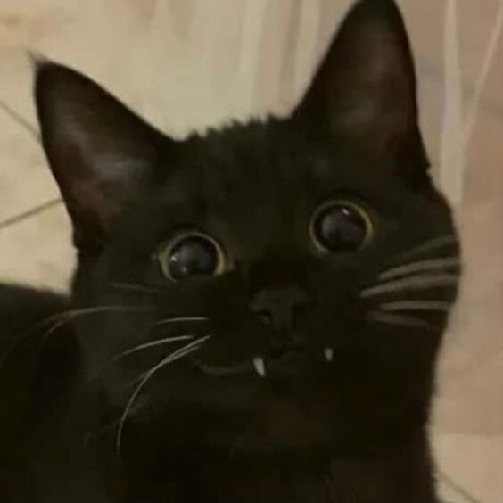

<section id="aboutMe" class="text-light">
    <div class="container container-fluid text-center">
        <div class="row align-items-center">
            <!-- Foto de perfil -->
            <div class="profilePhoto col-md-2 col-xl-2 mb-0 mx-auto">
                <!-- Un placeholder hasta que tenga una foto buena XD -->
                
            </div>
            <div class="col-md-8 col-xl-9 col-sm mx-auto text-md-start">
                <!-- Acerca de mi -->
                <div class="card mb-3 py-2 bg-glass">
                    <div class="card-body">
                        <!-- <h1 class="card-title">{{user.name}} {{user.surname}}</h1> -->
                        <h1 class="card-title">Tsu</h1>
                        <h4 class="card-subtitle">Junior Full-Stack Developer</h4>
                        <hr>
                        <p class="text-start card-text">Me llamo Luca Di&nbsp;Marco y soy un estudiante de desarrollo
                            web en busca de
                            oportunidades como
                            desarrollador fullstack.<br> He estado estudiando programación durante los últimos años, me
                            encanta resolver problemas y aprender nuevas tecnologías.
                            Tengo experiencia en actividades competitivas de equipo, soy una persona motivada y
                            comprometida en mi trabajo.
                        </p>
                        <a href="#" class="btn btn-outline-light btn-lg d-md-block " role="button">Ver más</a>
                    </div>
                </div>

            </div>
        </div>
    </div>
</section>